Look n°17
Escalier de Noël bordeaux et doré
Un grand hall de Noël qui éblouit : rampe habillée de guirlandes lumineuses et de nœuds en velours bordeaux, lustre en pluie de cristal, sapin aux boules dorées et lanternes. Voici les articles pour recréer ce look chez toi.
Prix au 07/11/2026
-
Console en pierre frittée blanche, cadre doré
120 × 30 × 79 cm, plateau effet marbre blanc, cadre fin en métal doré avec barreaux verticaux au centre.
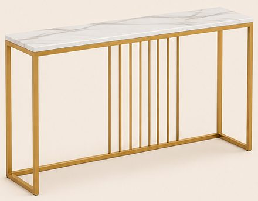
161,99 €Voir sur Amazon -
Banc ovale en bouclette blanche
110 × 45 × 42 cm, 4 boudins arrondis superposés, coffre de rangement sous l'assise.
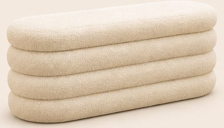
93,88 €Voir sur Amazon -
Miroir mural arche doré 120 × 80
120 × 80 cm, cadre fin en aluminium doré, à accrocher au-dessus de la console.
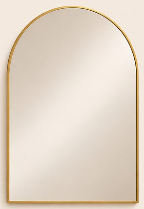
88,04 €Voir sur Amazon -
Tapis de couloir vintage beige rosé
80 × 300 cm, motif classique délavé avec bordure, poils ras, lavable.
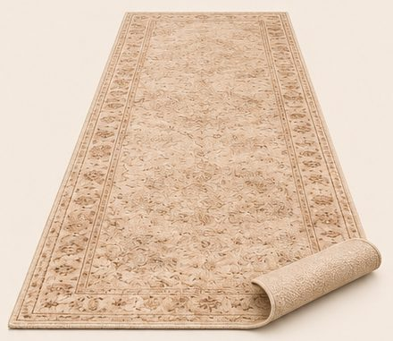
51,99 €Voir sur Amazon -
Sapin de Noël lumineux 210 cm
210 cm, Ø 147 cm, 1 380 pointes, LED blanc chaud intégrées.
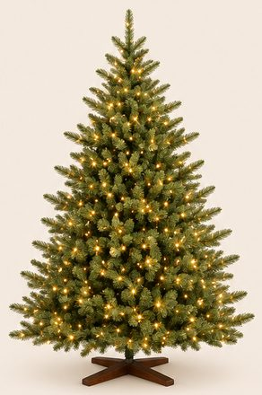
159,99 €Voir sur Amazon -
Lustre cascade en cristal doré pour escalier
Lustre long en prismes de cristal disposés en spirale sous une couronne dorée, fait pour les grandes hauteurs. Moins cher : le lustre à tiges de cristal (179,99 €, second lien). Sur l'image, les cristaux sont des tiges fines plutôt que des prismes.
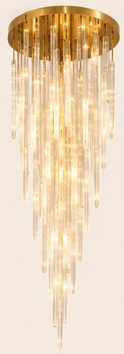
-
Guirlande de sapin lumineuse 270 cm
270 cm, branches en PE réalistes, LED à piles. L'image en montre 2 sur la rampe.
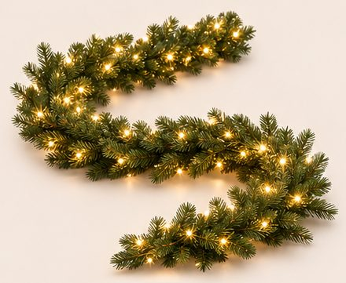
71,99 € (×2)Voir sur Amazon -
Grands nœuds en velours bordeaux
Nœud de 75 cm vendu à l'unité, comme sur l'image (elle en montre 14). Moins cher : le lot de 6 nœuds de 23 × 33 cm (15,22 €, second lien).
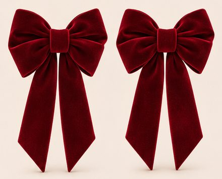
-
Boules dorées, boules rouges et étoile de cime
Boules en verre doré mat 8 cm (lot de 12, l'image en montre 24 : 2 lots) ; boules en verre rouge 8 cm (lot de 16) ; étoile dorée lumineuse 25 cm.
-
Grandes boîtes cadeaux rouges à ruban
32 × 32 × 25 cm, couvercle et ruban bordeaux noué. L'image en montre 3.
23,09 € (×3)Voir sur Amazon -
Lanternes dorées (lot de 3) et bougies LED
Lanternes de 50, 37 et 26,5 cm en acier doré et verre ; bougies LED ivoire avec télécommande. Sur l'image, le toit des lanternes est lisse ; sur les vraies, il est perforé.
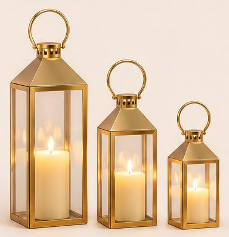
-
Grand vase en verre et baies rouges
Vase cylindre H 60 cm, Ø 15 cm ; 6 tiges de baies rouges givrées de 50 cm. Sur l'image, le vase paraît plus court et plus large que le vrai (60 cm de haut, 15 cm de large).
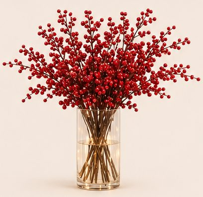
-
Bougies LED en verre doré (lot de 3)
10, 12,5 et 15 cm, flamme vacillante, télécommande.
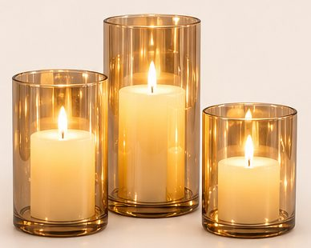
18,99 €Voir sur Amazon -
Ruban LED COB blanc chaud 10 m
2700 K, lumière continue sans points, télécommande. L'image en montre 2 rouleaux (escalier et console).
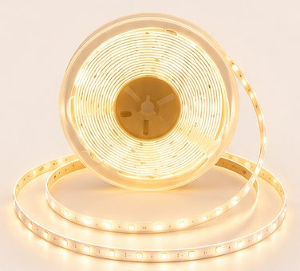
51,99 € (×2)Voir sur Amazon
Enregistrer ce look sur Pinterest
Comment naît un lookComment chaque article est choisi, mesuré et vérifiéImage d'inspiration générée par IA. Prix indicatifs, revérifiés toutes les deux semaines.